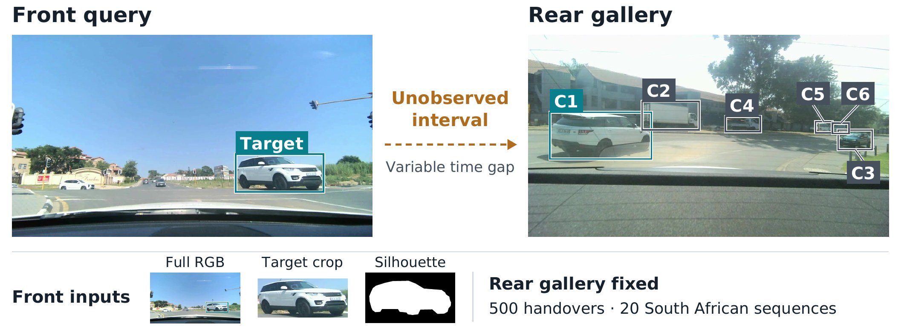
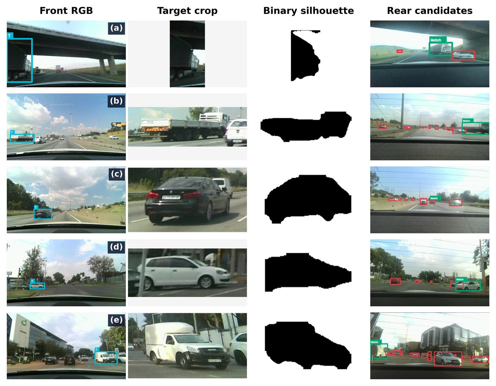
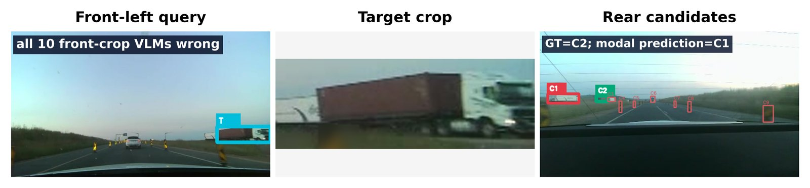
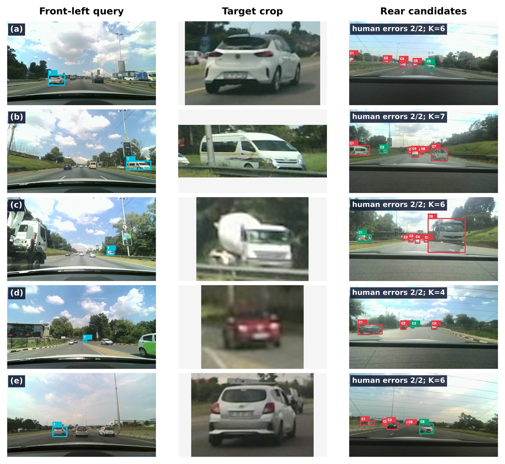
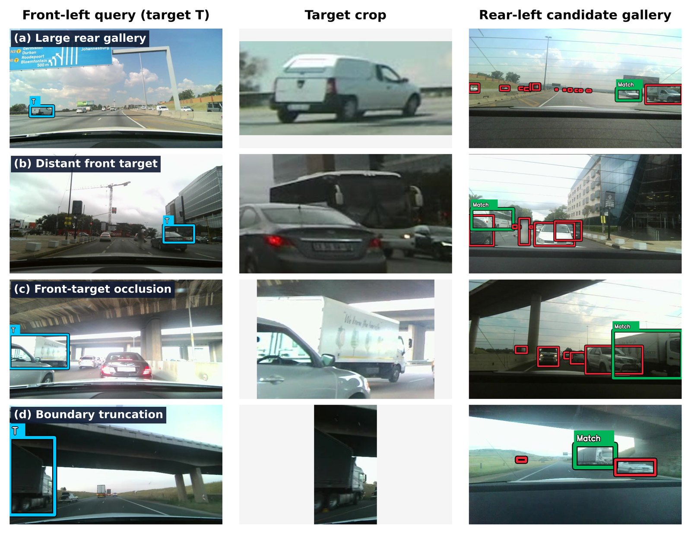

ACCV 2026 Workshop · CV4DC · under review
Front-to-Back: Benchmarking Vision-Language Models for Asymmetric Cross-View Vehicle Re-Identification
1MindForge AI, Johannesburg, South Africa2University of Hawai‘i at Mānoa, Honolulu, HI, USA
TL;DR 500 real front-to-rear vehicle handovers from South African roads. Zero-shot VLMs don’t beat a frozen SigLIP2 encoder, and people still lead the best model by 16–31 points.

Abstract
Matching the same vehicle across front and rear cameras is difficult because the cameras do not share a view and the vehicle’s appearance changes substantially. We introduce Front2Back-ReID, a benchmark of 500 manually verified vehicle handovers from 20 recording sequences in South Africa. Each example asks a model to match a vehicle highlighted in a front-camera image to the same vehicle among at least three candidates in a later rear-camera image. We evaluate seven zero-shot vision-language models, four image-retrieval baselines, and 25 human participants. Models are tested using full front RGB images, cropped target vehicles, and binary silhouettes. The strongest VLM achieved 76.6% Rank-1 accuracy on target crops, compared with 74.0% for the frozen SigLIP2 baseline; this difference was not statistically clear. Human participants achieved 94.0% accuracy with full images and 92.2% with target crops. Under our evaluation setup, enabling reasoning improved accuracy across all three input conditions for every model evaluated in both modes. We also found that VLMs generally performed worse on full scenes than on target crops. These results show that general-purpose VLMs do not yet consistently outperform strong visual retrieval for front-to-rear vehicle matching, while humans remain substantially more reliable.
Key findings
- 1
VLMs don’t beat frozen retrieval
The best VLM, GPT-5.5 with reasoning, scores 76.6% on crops against 74.0% for SigLIP2. The gap isn’t significant.
- 2
Context hurts models, not people
VLMs lose 6.6–16.4 points on full scenes, while humans gain 1.8.
- 3
Small targets break models
Humans hold 93.2% on the smallest rear targets, while Llama 4 Scout drops to 38.7%.
The task
- Find a vehicle highlighted in the front-left camera
- among the K ≥ 3 labelled candidates in a later rear-left frame,
- with no video in between, no fixed time gap and no camera calibration.

The benchmark
- Handovers
- 500
- Recordings
- 20 · 5 cities
- Driving
- ≈1.9 h
- Frames
- 844
- Gallery size
- 3–15
- Cameras
- 2 × <US$100 stereo
Composition
![Overview diagram in three panels: benchmark construction (front and rear camera recordings, YOLOE-26 proposals, curator correction, front-target and rear-match verification, S2M2 stereo depth, 500 verified handovers); task and evidence conditions (front-left target, blind interval, rear-left candidate gallery with one true match, front evidence as full RGB, target crop or binary silhouette); evaluation protocol (zero-shot VLMs with reasoning disabled or enabled, frozen retrieval baselines, human reference with 25 participants, Rank-1 accuracy with 95% BCa intervals).](site/img/overview.jpg)
Evaluation
Seven zero-shot VLMs, four frozen retrieval baselines and 25 people make the same 500 decisions. The metric is Rank-1, with 95% BCa intervals. See the results →
Prompt used for every VLM
Shared task and decision rules
You are a careful evaluator for an asymmetric front-to-rear vehicle re-identification benchmark. Match the front target to exactly one rear candidate using only the permitted evidence below. Allow for viewpoint, illumination, scale, blur, pose, truncation, and partial occlusion; treat a hidden cue or contour as unknown, not as a mismatch. Never use candidate order, image position, bounding-box size, or road plausibility as identity evidence. Detector classes, detector confidence, and numeric box coordinates are withheld. Rear candidates: [C1, C2, ...].
RGB cues: body configuration, silhouette, color or livery, roofline, windows, lights, wheels, cargo structure, markings, and accessories. Mask cues: silhouette, body proportions, roofline, wheel placement, cargo structure, and visible accessories; never infer color or texture.
Full RGB
The front input is the full RGB scene with target T highlighted. Apply the RGB cues to the target. Scene context may help interpret viewpoint, visibility, motion, and surrounding relationships, but context alone is not sufficient evidence of identity.
Target crop
The front input is a crop of target T. Apply the RGB cues using only appearance visible inside the crop; no wider scene context is provided.
Target mask
The front input is target T’s binary segmentation mask. Apply only the mask cues; target color and texture are unavailable.
Shared structured-output contract
candidate_id: one listed alias; candidate_probabilities: every alias exactly once, values in [0, 1] summing to 1; confidence: candidate_probabilities[candidate_id]; reasoning: one short permitted-evidence sentence. Return JSON only; no Markdown, preamble, hidden reasoning, detector labels, or detector confidence scores.
Get the data
Download
annotations/pairs.jsonlpairs, image paths, target and candidate boxesannotations/ground_truth.jsonlcorrect candidate per pair. Keep it out of prompts.splits/test500.txtthe fixed evaluation orderdata/844 original frames and target masksinputs/marked front, labelled rear gallery, target cropevaluate.py·verify.pyscoring and integrity checks
Quick start
git clone https://github.com/Mind-Forge-AI/Front2Back-ReID
cd Front2Back-ReID && pip install -e ".[baselines]"
python scripts/download_data.py
python scripts/run_baselines.py --data data/front2back-reid-v1.1
python scripts/evaluate.py --data data/front2back-reid-v1.1 predictions.jsonlPredictions: one {"pair_id": "P0001", "candidate_id": "C2"} per line, scored as Rank-1 over all 500 pairs. Reproduce the paper →
Code: MIT License. Using the benchmark? Please cite the paper.
Results
Strong retrieval, fragile context, human headroom
Seven zero-shot VLMs, four retrieval baselines and 25 people make the same 500 decisions. Brackets are 95% BCa intervals.
Leaderboard
Rank-1 accuracy by front evidence
Δctx = full RGB − crop. LLaVA-OneVision always answers C1. Gemini 2.5 Pro can’t disable reasoning, and the Qwen reasoning runs were incomplete.
Front evidence & reasoning
How the front evidence changes accuracy
Vertical rules mark the human reference
What reasoning buys
Paired change in points, medium effort vs disabled
Reasoning helps selectively
GPT-5.4 mini gains 11–14 points everywhere. GPT-5.5 barely moves on crops (+1.8, not significant).
Crops beat scenes
Crops beat full scenes by 6.6–16.4 points. Silhouettes trail crops by 27–42.
Difficulty
Where models break
Target-crop Rank-1 without reasoning. The human line pools full RGB and crops.
Vehicle-only count Vi. Range uses the 341 pairs with stereo depth.
Humans
Human reference
25 people, 20 full-RGB and 20 crop trials each
Wrong answers take longer
Median and IQR, in seconds
Failure cases

What the models said
| Model | Pick | Conf. | Evidence sentence (model output) |
|---|---|---|---|
| GPT-5.5 (R) | C1 | 0.86 | C1 is the only candidate showing a large white-cab tractor with a long reddish-brown box trailer matching the target. |
| GPT-5.5 | C1 | 0.72 | C1 shows the same large white tractor with a long reddish-brown box trailer silhouette as the front target. |
| GPT-5.4 mini (R) | C1 | 0.44 | C1 is the only candidate with a long semi-trailer silhouette and white cab/trailer combination matching the target truck. |
| GPT-5.4 mini | C1 | 0.72 | C1 best matches the front target’s white boxy vehicle shape with a light cab and long rectangular cargo body. |
| Gemini 2.5 Pro (R) | C1 | 0.92 | The target is a white tractor pulling a white trailer, and C1 is the only candidate that is a large white truck. |
| Gemini 2.5 Flash (R) | C1 | 0.92 | The target vehicle is a white semi-truck with a red shipping container, which precisely matches candidate C1. |
| Gemini 2.5 Flash | C1 | 1.00 | The target vehicle is a white semi-truck with a red container, which perfectly matches candidate C1. |
| Qwen 3.6 27B | C1 | 0.90 | The target vehicle is a white semi-truck cab, which matches the white truck cab visible in candidate C1, whereas all other candidates are small dark vehicles. |
| Llama 4 Scout | C1 | 1.00 | The truck’s white cab and brown cargo container match. |
| LLaVA-OneVision 0.5B | C1 | 0.11 | one short sentence citing visible identity evidence. |
R = medium-effort reasoning. These sentences are model outputs, not verified explanations. LLaVA-OneVision echoed the prompt template.


Limitations
500 daytime-heavy handovers (97.6%) from five South African cities, built for controlled comparison rather than broad generalisation.
Try the task
Can you beat the models?
Twenty trials in the format of the human study. Find the front vehicle in the rear gallery, then compare yourself with people and every model.
Click a box or a label, then confirm. Keyboard: 1–9 select, Enter confirms, Z zooms.
Explore
All 500 handovers
Every pair with its difficulty labels. Switch the front evidence and reveal the match.